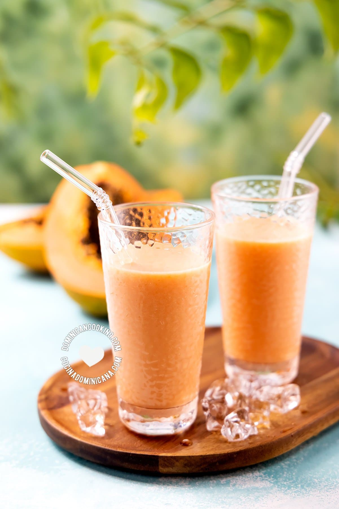

Batida de lechosa es una de las recetas más populares de nuestro blog, y una de las bebidas más
populares de la Republica Dominicana. La "papaya" se consume sobre todo en esta
bebida.

Ingredientes
1 taza de azucar.
3 tazas de lechosa.
1 cucharadita de vainilla.
hielo.
1 litro de leche evaporada.
Pasos
pon los cubos de lechosa.
vainilla.
hielo.
leche evaporada.
azucar al gusto.
y licúa a alta velocidad hasta que el hielo se haya licuado.
Esta receta fue buscada en la pagina https://www.cocinadominicana.com/batida-de-lechosa